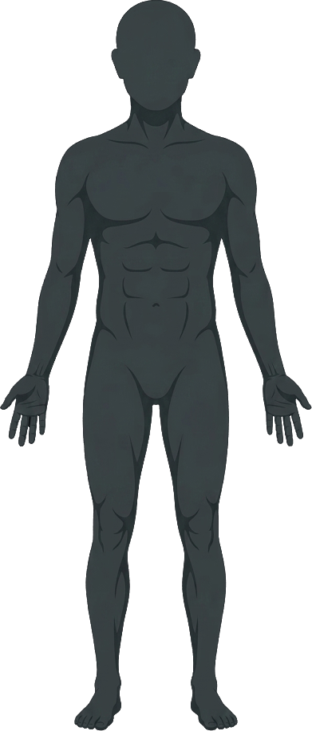

<!DOCTYPE html>
<html lang="ja">
<head>
<meta charset="utf-8" />
<meta name="viewport" content="width=device-width, initial-scale=1" />
<title>OpenViBE Bio-Signal Body Monitor</title>
<link rel="preconnect" href="https://fonts.googleapis.com" />
<link rel="preconnect" href="https://fonts.gstatic.com" crossorigin />
<link href="https://fonts.googleapis.com/css2?family=IBM+Plex+Sans:wght@400;500;600&family=IBM+Plex+Mono:wght@400;500;600&display=swap" rel="stylesheet" />
<link rel="stylesheet" href="styles.css" />
</head>
<body>
<div id="root"></div>

<script src="https://unpkg.com/react@18.3.1/umd/react.development.js" integrity="sha384-hD6/rw4ppMLGNu3tX5cjIb+uRZ7UkRJ6BPkLpg4hAu/6onKUg4lLsHAs9EBPT82L" crossorigin="anonymous"></script>
<script src="https://unpkg.com/react-dom@18.3.1/umd/react-dom.development.js" integrity="sha384-u6aeetuaXnQ38mYT8rp6sbXaQe3NL9t+IBXmnYxwkUI2Hw4bsp2Wvmx4yRQF1uAm" crossorigin="anonymous"></script>
<script src="https://unpkg.com/@babel/standalone@7.29.0/babel.min.js" integrity="sha384-m08KidiNqLdpJqLq95G/LEi8Qvjl/xUYll3QILypMoQ65QorJ9Lvtp2RXYGBFj1y" crossorigin="anonymous"></script>
<script src="devices.js"></script>
<script src="constructs.js"></script>
<script src="interventions.js"></script>

<script>
/* Bio-signal realtime simulators.
 * Each simulator returns a generator pushing samples at its native rate.
 * We use a shared clock; each modality maintains its own ring buffer.
 */

const MODALITIES = [
  {
    id: 'eeg', name: 'EEG', jp: '脳波',
    loc: 'Fp1 / Fp2 / Cz', color: 'var(--eeg)', hex: '#7aa2ff',
    fs: 256, channels: 6, chNames: ['Fp1','Fp2','F3','F4','C3','Cz'],
    unit: 'μV', range: 80, window: 8,
    hotspot: { x: 50, y: 14 },  // head
    panels: ['raw','psd','bands'],
    kpis: [
      { id:'alpha', lbl:'α POWER', unit:'μV²' },
      { id:'beta',  lbl:'β POWER', unit:'μV²' },
      { id:'ab_ratio', lbl:'α/β', unit:'' },
    ],
  },
  {
    id: 'ecg', name: 'ECG', jp: '心電',
    loc: 'Lead II', color: 'var(--ecg)', hex: '#ff6b6b',
    fs: 250, channels: 1, chNames: ['II'],
    unit: 'mV', range: 2.5, window: 6,
    hotspot: { x: 43, y: 30 }, // chest (heart)
    panels: ['raw','kpi'],
    kpis: [
      { id:'hr',   lbl:'HR',    unit:'bpm', big:true },
      { id:'rr',   lbl:'RR',    unit:'ms' },
      { id:'qrs',  lbl:'QRS',   unit:'ms' },
      { id:'lfhf', lbl:'LF/HF', unit:'' },
    ],
  },
  {
    id: 'ppg', name: 'PPG', jp: '脈波',
    loc: 'Index finger', color: 'var(--ppg)', hex: '#ff9a55',
    fs: 100, channels: 1, chNames: ['PPG'],
    unit: 'a.u.', range: 1.2, window: 8,
    hotspot: { x: 11, y: 57 }, // right hand (viewer's left)
    panels: ['raw','kpi'],
    kpis: [
      { id:'hr',   lbl:'HR',   unit:'bpm', big:true },
      { id:'spo2', lbl:'SpO₂', unit:'%' },
      { id:'pi',   lbl:'PI',   unit:'%' },
    ],
  },
  {
    id: 'emg', name: 'EMG', jp: '筋電',
    loc: 'Biceps brachii', color: 'var(--emg)', hex: '#c593ff',
    fs: 1000, channels: 2, chNames: ['EMG-L','EMG-R'],
    unit: 'μV', range: 200, window: 4,
    hotspot: { x: 18, y: 35 }, // biceps (viewer's left)
    panels: ['raw','psd','kpi'],
    kpis: [
      { id:'rms',   lbl:'RMS',     unit:'μV' },
      { id:'mdf',   lbl:'MDF',     unit:'Hz' },
      { id:'burst', lbl:'BURSTS',  unit:'/min' },
    ],
  },
  {
    id: 'eda', name: 'EDA', jp: '皮膚電気',
    loc: 'Palm / fingers', color: 'var(--eda)', hex: '#4fd0a3',
    fs: 32, channels: 1, chNames: ['GSR'],
    unit: 'μS', range: 12, window: 30,
    hotspot: { x: 89, y: 57 }, // left hand (viewer's right)
    panels: ['raw','kpi'],
    kpis: [
      { id:'scl',  lbl:'SCL',     unit:'μS' },
      { id:'scr',  lbl:'SCR',     unit:'/min' },
      { id:'amp',  lbl:'AMP',     unit:'μS' },
    ],
  },
  {
    id: 'resp', name: 'RESP', jp: '呼吸',
    loc: 'Thoracic belt', color: 'var(--resp)', hex: '#5cc8e7',
    fs: 32, channels: 1, chNames: ['RESP'],
    unit: 'a.u.', range: 1.5, window: 30,
    hotspot: { x: 57, y: 46 }, // upper abdomen / diaphragm
    panels: ['raw','kpi'],
    kpis: [
      { id:'rr',    lbl:'RR',     unit:'brpm', big:true },
      { id:'tidal', lbl:'TIDAL',  unit:'a.u.' },
      { id:'ie',    lbl:'I:E',    unit:'' },
    ],
  },
  {
    id: 'temp', name: 'TEMP', jp: '皮膚温',
    loc: 'Sternum', color: 'var(--temp)', hex: '#f2c94c',
    fs: 4, channels: 1, chNames: ['TEMP'],
    unit: '°C', range: 2, window: 120,
    hotspot: { x: 58, y: 26 }, // sternum
    panels: ['raw','kpi'],
    kpis: [
      { id:'t',    lbl:'TEMP',    unit:'°C', big:true },
      { id:'drift',lbl:'DRIFT',   unit:'°C/min' },
    ],
  },
  {
    id: 'acc', name: 'ACC', jp: '加速度',
    loc: 'Trunk IMU', color: 'var(--acc)', hex: '#a0e050',
    fs: 50, channels: 3, chNames: ['X','Y','Z'],
    unit: 'g', range: 2.5, window: 10,
    hotspot: { x: 47, y: 57 }, // trunk / core
    panels: ['raw','kpi'],
    kpis: [
      { id:'mag',  lbl:'|a|',     unit:'g' },
      { id:'act',  lbl:'ACTIVITY',unit:'%' },
      { id:'tilt', lbl:'TILT',    unit:'°' },
    ],
  },
  {
    id: 'eye', name: 'EYE', jp: '眼球',
    loc: 'Gaze / pupil', color: 'var(--eye)', hex: '#ff7ac6',
    fs: 60, channels: 2, chNames: ['GazeX','GazeY'],
    unit: '°', range: 25, window: 6,
    hotspot: { x: 50, y: 12 }, // eyes
    panels: ['raw','kpi'],
    kpis: [
      { id:'pupil', lbl:'PUPIL',   unit:'mm' },
      { id:'blink', lbl:'BLINK',   unit:'/min' },
      { id:'fix',   lbl:'FIXATION',unit:'%' },
    ],
  },
];

const SOURCE_ANCHORS = {
  eeg: { head: { x: 50, y: 9 } },
  ecg: { chest: { x: 45, y: 26 }, wristL: { x: 84, y: 56 } },
  ppg: { finger: { x: 11, y: 64 }, wristL: { x: 84, y: 56 }, wristR: { x: 16, y: 56 }, earL: { x: 56, y: 13 } },
  emg: { armR: { x: 21, y: 36 }, armL: { x: 79, y: 36 } },
  eda: { palm: { x: 89, y: 64 }, wristL: { x: 84, y: 56 } },
  resp: { abdomen: { x: 50, y: 42 }, chest: { x: 50, y: 30 } },
  temp: { chest: { x: 50, y: 22 }, wristL: { x: 84, y: 58 }, finger: { x: 11, y: 64 } },
  acc: { trunk: { x: 50, y: 50 }, wristL: { x: 84, y: 56 }, head: { x: 50, y: 9 }, chest: { x: 50, y: 26 }, finger: { x: 11, y: 64 } },
  eye: { eyes: { x: 50, y: 11 } },
};

const DEFAULT_SOURCES = {
  eeg: "head",
  ecg: "chest",
  ppg: "finger",
  emg: "armR",
  eda: "palm",
  resp: "abdomen",
  temp: "chest",
  acc: "trunk",
  eye: "eyes",
};

for (const mod of MODALITIES) {
  const anchors = SOURCE_ANCHORS[mod.id] || {};
  if (!Object.keys(anchors).length && mod.hotspot) {
    anchors.default = { x: mod.hotspot.x, y: mod.hotspot.y };
  }
  mod.anchors = anchors;
  mod.defaultSource = DEFAULT_SOURCES[mod.id] || Object.keys(anchors)[0] || "default";
}

function resolveModalityAnchors(mod, activeSourcesByModality = {}) {
  const requested = activeSourcesByModality[mod.id];
  const fromSources = Array.isArray(requested) && requested.length ? requested : [mod.defaultSource];
  const anchors = [];
  for (const source of fromSources) {
    const pt = mod.anchors?.[source];
    if (pt) anchors.push({ source, x: pt.x, y: pt.y });
  }
  if (!anchors.length && mod.hotspot) {
    anchors.push({ source: "legacy", x: mod.hotspot.x, y: mod.hotspot.y });
  }
  return anchors;
}

/* ───── Ring buffer ───── */
class Ring {
  constructor(cap) { this.cap = cap; this.data = new Float32Array(cap); this.n = 0; this.head = 0; }
  push(v) {
    this.data[this.head] = v;
    this.head = (this.head + 1) % this.cap;
    if (this.n < this.cap) this.n++;
  }
  /* Copy most recent N samples into dst (oldest→newest). */
  read(dst, n) {
    n = Math.min(n, this.n);
    const start = (this.head - n + this.cap) % this.cap;
    for (let i = 0; i < n; i++) dst[i] = this.data[(start + i) % this.cap];
    return n;
  }
}

/* ───── Simulator factory ───── */
function makeSim(mod, t0) {
  const s = {
    mod,
    buffers: Array.from({ length: mod.channels }, () => new Ring(Math.ceil(mod.fs * (mod.window + 2)))),
    longBuffers: Array.from({ length: mod.channels }, () => new Ring(Math.ceil(mod.fs * 120))),
    t: t0,
    _phase: {},
    rPeaks: [],       // timestamps of detected R peaks (ECG) / pulse peaks (PPG)
    /* for metrics */
    hr: 72, rrMs: 833, lastBeat: t0,
    state: {},
  };
  s.step = (dt) => stepSim(s, dt);
  return s;
}

function stepSim(s, dt) {
  const { mod } = s;
  const fs = mod.fs;
  const nSamples = Math.max(1, Math.round(dt * fs));
  const invFs = 1 / fs;
  for (let i = 0; i < nSamples; i++) {
    s.t += invFs;
    generate(s);
  }
}

function generate(s) {
  const { mod, t } = s;
  switch (mod.id) {
    case 'eeg': return genEEG(s);
    case 'ecg': return genECG(s);
    case 'ppg': return genPPG(s);
    case 'emg': return genEMG(s);
    case 'eda': return genEDA(s);
    case 'resp':return genRESP(s);
    case 'temp':return genTEMP(s);
    case 'acc': return genACC(s);
    case 'eye': return genEYE(s);
  }
}

/* Frequency-mix EEG: variable α/β/θ + pink noise. */
function genEEG(s) {
  const t = s.t;
  // Slowly modulate alpha amplitude (eyes-open/closed simulation)
  const alphaAmp = 18 + 10 * Math.sin(2 * Math.PI * t / 16);
  const betaAmp  = 10 + 3 * Math.sin(2 * Math.PI * t / 9 + 1);
  const thetaAmp = 8;
  const deltaAmp = 6;
  for (let c = 0; c < s.buffers.length; c++) {
    const phase = c * 0.4;
    const v =
      alphaAmp * Math.sin(2 * Math.PI * 10.2 * t + phase) +
      betaAmp  * Math.sin(2 * Math.PI * 19   * t + phase * 1.7) +
      thetaAmp * Math.sin(2 * Math.PI *  5.5 * t + phase * 0.5) +
      deltaAmp * Math.sin(2 * Math.PI *  2.2 * t + phase) +
      (Math.random() - 0.5) * 14;  // broadband noise
    s.buffers[c].push(v);
    s.longBuffers[c].push(v);
  }
}

/* ECG: biphasic P, sharp QRS, T wave; HR 60-78bpm with respiratory sinus arrhythmia */
function genECG(s) {
  const t = s.t;
  // HR modulated by breathing
  const hr = 70 + 6 * Math.sin(2 * Math.PI * t / 5.0);
  s.hr = 0.9 * s.hr + 0.1 * hr;
  const period = 60 / s.hr;
  if (t - s.lastBeat >= period) {
    s.lastBeat = t;
    s.rPeaks.push(t);
    if (s.rPeaks.length > 200) s.rPeaks.shift();
  }
  const phase = ((t - s.lastBeat) / period);
  let v = 0;
  // P
  v += 0.15 * Math.exp(-Math.pow((phase - 0.12) / 0.03, 2));
  // Q
  v -= 0.12 * Math.exp(-Math.pow((phase - 0.30) / 0.012, 2));
  // R
  v += 1.35 * Math.exp(-Math.pow((phase - 0.34) / 0.010, 2));
  // S
  v -= 0.30 * Math.exp(-Math.pow((phase - 0.38) / 0.015, 2));
  // T
  v += 0.35 * Math.exp(-Math.pow((phase - 0.62) / 0.06, 2));
  v += (Math.random() - 0.5) * 0.025;
  // baseline wander
  v += 0.05 * Math.sin(2 * Math.PI * t * 0.25);
  s.buffers[0].push(v);
  s.longBuffers[0].push(v);
  s.rrMs = 1000 * period;
}

/* PPG: smooth pulsatile with dicrotic notch */
function genPPG(s) {
  const t = s.t;
  const hr = 72 + 4 * Math.sin(2 * Math.PI * t / 6);
  const period = 60 / hr;
  const phase = ((t % period) / period);
  let v = 0;
  v += 0.85 * Math.exp(-Math.pow((phase - 0.28) / 0.10, 2));
  v += 0.28 * Math.exp(-Math.pow((phase - 0.52) / 0.09, 2)); // dicrotic
  v += 0.5;  // baseline
  v += 0.02 * Math.sin(2 * Math.PI * t * 0.2);
  v += (Math.random() - 0.5) * 0.01;
  s.buffers[0].push(v);
  s.longBuffers[0].push(v);
}

/* EMG: bursty high-frequency noise, bursts every ~2s */
function genEMG(s) {
  const t = s.t;
  // Gate: 1s on, 1.2s off (staggered per-channel)
  for (let c = 0; c < s.buffers.length; c++) {
    const phase = (t + c * 0.6) % 2.6;
    const active = phase < 1.0 ? Math.sin(Math.PI * phase / 1.0) : 0.05;
    const v = active * 120 * (Math.random() - 0.5) + 8 * (Math.random() - 0.5);
    s.buffers[c].push(v);
    s.longBuffers[c].push(v);
  }
}

/* EDA: slowly rising baseline + skin conductance responses */
function genEDA(s) {
  const t = s.t;
  if (!s.state.scrs) s.state.scrs = [];
  // Random SCR every 8-15s
  if (Math.random() < 1 / (s.mod.fs * 10) ) {
    s.state.scrs.push({ t0: t + 1, amp: 0.5 + Math.random() * 1.2 });
  }
  let v = 4.5 + 0.4 * Math.sin(2 * Math.PI * t / 90);
  for (const scr of s.state.scrs) {
    const dt = t - scr.t0;
    if (dt > 0) v += scr.amp * (1 - Math.exp(-dt / 1.5)) * Math.exp(-dt / 6.0);
  }
  s.state.scrs = s.state.scrs.filter(scr => t - scr.t0 < 20);
  v += (Math.random() - 0.5) * 0.02;
  s.buffers[0].push(v);
  s.longBuffers[0].push(v);
}

function genRESP(s) {
  const t = s.t;
  const rr = 14 + 2 * Math.sin(2 * Math.PI * t / 40);  // breaths per min
  const period = 60 / rr;
  const phase = (t % period) / period;
  // Asymmetric: I:E ≈ 1:2
  let v;
  if (phase < 0.33) v = Math.sin(Math.PI * phase / 0.33);
  else v = Math.cos(Math.PI * (phase - 0.33) / 0.67) * 0.5 + 0.5;
  v = v - 0.5;
  v += (Math.random() - 0.5) * 0.02;
  s.buffers[0].push(v);
  s.longBuffers[0].push(v);
}

function genTEMP(s) {
  const t = s.t;
  const v = 32.8 + 0.6 * Math.sin(2 * Math.PI * t / 180) + 0.05 * Math.sin(2 * Math.PI * t / 12) + (Math.random() - 0.5) * 0.02;
  s.buffers[0].push(v);
  s.longBuffers[0].push(v);
}

function genACC(s) {
  const t = s.t;
  // Subtle breathing sway + occasional step-like burst
  const burst = Math.random() < 1 / (s.mod.fs * 6) ? 1.5 : 0;
  s.state.burst = 0.85 * (s.state.burst || 0) + burst;
  const breath = 0.04 * Math.sin(2 * Math.PI * t / 4);
  s.buffers[0].push(0.02 + breath + (Math.random() - 0.5) * 0.03 + s.state.burst * (Math.random() - 0.5));
  s.buffers[1].push(-0.02 + breath * 0.5 + (Math.random() - 0.5) * 0.03 + s.state.burst * (Math.random() - 0.5) * 0.6);
  s.buffers[2].push(0.98 + (Math.random() - 0.5) * 0.04 + s.state.burst * (Math.random() - 0.5) * 0.2);
  for (let c = 0; c < 3; c++) s.longBuffers[c].push(s.buffers[c].data[(s.buffers[c].head - 1 + s.buffers[c].cap) % s.buffers[c].cap]);
}

function genEYE(s) {
  const t = s.t;
  if (!s.state.tgt) s.state.tgt = { x: 0, y: 0, nextT: 0 };
  if (t > s.state.tgt.nextT) {
    s.state.tgt = {
      x: (Math.random() - 0.5) * 20,
      y: (Math.random() - 0.5) * 12,
      nextT: t + 0.4 + Math.random() * 1.5,
    };
  }
  // Saccade (fast approach) + micro-tremor
  s.state.x = (s.state.x || 0) * 0.88 + s.state.tgt.x * 0.12 + (Math.random() - 0.5) * 0.3;
  s.state.y = (s.state.y || 0) * 0.88 + s.state.tgt.y * 0.12 + (Math.random() - 0.5) * 0.2;
  // Blink
  if (!s.state.blinkEnd) s.state.blinkEnd = 0;
  if (t > s.state.blinkEnd && Math.random() < 1 / (s.mod.fs * 4)) s.state.blinkEnd = t + 0.15;
  const blinking = t < s.state.blinkEnd;
  s.buffers[0].push(blinking ? 0 : s.state.x);
  s.buffers[1].push(blinking ? 0 : s.state.y);
  s.longBuffers[0].push(s.state.x);
  s.longBuffers[1].push(s.state.y);
}

/* ───── Metrics ───── */
function computeKPIs(s) {
  const mod = s.mod;
  const out = {};
  switch (mod.id) {
    case 'eeg': {
      const buf = new Float32Array(Math.min(s.buffers[0].n, mod.fs * 2));
      const n = s.buffers[0].read(buf, buf.length);
      if (n < 64) break;
      const psd = welch(buf.subarray(0, n), mod.fs);
      out.alpha = bandPower(psd, 8, 13);
      out.beta  = bandPower(psd, 13, 30);
      out.theta = bandPower(psd, 4, 8);
      out.delta = bandPower(psd, 1, 4);
      out.gamma = bandPower(psd, 30, 40);
      out.ab_ratio = out.beta > 0 ? out.alpha / out.beta : 0;
      out._psd = psd;
      break;
    }
    case 'ecg': case 'ppg': {
      // HR from recent R peaks
      const peaks = s.rPeaks;
      if (mod.id === 'ecg' && peaks.length >= 2) {
        const recent = peaks.slice(-6);
        const rrs = [];
        for (let i = 1; i < recent.length; i++) rrs.push(recent[i] - recent[i-1]);
        const rr = rrs.reduce((a,b)=>a+b,0)/rrs.length;
        out.hr = 60 / rr;
        out.rr = rr * 1000;
        out.qrs = 78 + (Math.random()-0.5)*6;
        // LF/HF mock from rr variability
        const sd = Math.sqrt(rrs.reduce((a,b)=>a + (b-rr)*(b-rr),0)/rrs.length);
        out.lfhf = 0.8 + sd * 50;
      } else if (mod.id === 'ppg') {
        // Detect peaks in recent buffer
        const buf = new Float32Array(Math.min(s.buffers[0].n, mod.fs * 6));
        const n = s.buffers[0].read(buf, buf.length);
        const peaks = findPeaks(buf.subarray(0,n), mod.fs, 0.4);
        if (peaks.length >= 2) {
          const rrs = [];
          for (let i = 1; i < peaks.length; i++) rrs.push((peaks[i]-peaks[i-1])/mod.fs);
          const rr = rrs.reduce((a,b)=>a+b,0)/rrs.length;
          out.hr = 60/rr;
        }
        out.spo2 = 97 + (Math.random()-0.5)*1.4;
        out.pi = 4.2 + (Math.random()-0.5)*0.8;
      }
      break;
    }
    case 'emg': {
      const buf = new Float32Array(Math.min(s.buffers[0].n, mod.fs));
      const n = s.buffers[0].read(buf, buf.length);
      let sum2 = 0;
      for (let i=0;i<n;i++) sum2 += buf[i]*buf[i];
      out.rms = Math.sqrt(sum2/Math.max(1,n));
      const psd = welch(buf.subarray(0,n), mod.fs);
      out.mdf = medianFreq(psd);
      out.burst = 24 + (Math.random()-0.5)*6;
      out._psd = psd;
      break;
    }
    case 'eda': {
      const buf = new Float32Array(Math.min(s.buffers[0].n, mod.fs*30));
      const n = s.buffers[0].read(buf, buf.length);
      let mean=0; for (let i=0;i<n;i++) mean += buf[i]; mean /= Math.max(1,n);
      out.scl = mean;
      out.scr = 3 + Math.random()*2;
      out.amp = 0.6 + Math.random()*0.3;
      break;
    }
    case 'resp': {
      const buf = new Float32Array(Math.min(s.buffers[0].n, mod.fs*30));
      const n = s.buffers[0].read(buf, buf.length);
      const peaks = findPeaks(buf.subarray(0,n), mod.fs, 3.5);
      if (peaks.length >= 2) {
        out.rr = (peaks.length-1) / ((peaks[peaks.length-1]-peaks[0])/mod.fs) * 60;
      } else out.rr = 14;
      out.tidal = 0.85;
      out.ie = '1:2.1';
      break;
    }
    case 'temp': {
      const buf = new Float32Array(Math.min(s.buffers[0].n, mod.fs*60));
      const n = s.buffers[0].read(buf, buf.length);
      out.t = n ? buf[n-1] : 33.2;
      out.drift = n > 10 ? (buf[n-1]-buf[0]) / (n/mod.fs/60) : 0;
      break;
    }
    case 'acc': {
      let m = 0;
      for (let c=0;c<3;c++) {
        const v = s.buffers[c].data[(s.buffers[c].head-1+s.buffers[c].cap)%s.buffers[c].cap];
        m += v*v;
      }
      out.mag = Math.sqrt(m);
      out.act = Math.min(100, 14 + Math.random()*12);
      out.tilt = 4 + (Math.random()-0.5)*3;
      break;
    }
    case 'eye': {
      out.pupil = 3.4 + 0.2 * Math.sin(s.t/3);
      out.blink = 14 + (Math.random()-0.5)*4;
      out.fix = 72 + (Math.random()-0.5)*8;
      break;
    }
  }
  return out;
}

/* Welch periodogram (simple radix-2 power-of-2 segments). */
function welch(sig, fs) {
  const nseg = 256;
  if (sig.length < nseg) return { f: new Float32Array(0), p: new Float32Array(0) };
  const step = Math.floor(nseg/2);
  const win = new Float32Array(nseg);
  for (let i=0;i<nseg;i++) win[i] = 0.5 - 0.5 * Math.cos(2*Math.PI*i/(nseg-1));
  const p = new Float32Array(nseg/2);
  let count = 0;
  for (let start=0; start+nseg<=sig.length; start+=step) {
    const seg = new Float32Array(nseg);
    let mean = 0;
    for (let i=0;i<nseg;i++) mean += sig[start+i];
    mean /= nseg;
    for (let i=0;i<nseg;i++) seg[i] = (sig[start+i]-mean) * win[i];
    // Naive DFT for first nseg/2 bins (nseg is small → fine)
    for (let k=0;k<nseg/2;k++) {
      let re=0, im=0;
      for (let n=0;n<nseg;n++) {
        const ph = 2*Math.PI*k*n/nseg;
        re += seg[n]*Math.cos(ph);
        im -= seg[n]*Math.sin(ph);
      }
      p[k] += (re*re + im*im);
    }
    count++;
  }
  if (count === 0) return { f: new Float32Array(0), p: new Float32Array(0) };
  const f = new Float32Array(nseg/2);
  for (let k=0;k<nseg/2;k++) { f[k] = k * fs / nseg; p[k] /= count; }
  return { f, p };
}

function bandPower(psd, lo, hi) {
  let s = 0, c = 0;
  for (let i=0;i<psd.f.length;i++) {
    if (psd.f[i] >= lo && psd.f[i] < hi) { s += psd.p[i]; c++; }
  }
  return c ? s/c : 0;
}

function medianFreq(psd) {
  let total = 0;
  for (let i=0;i<psd.p.length;i++) total += psd.p[i];
  let acc = 0;
  for (let i=0;i<psd.f.length;i++) {
    acc += psd.p[i];
    if (acc >= total/2) return psd.f[i];
  }
  return 0;
}

function findPeaks(sig, fs, minGapSec) {
  const minGap = Math.round(fs * (minGapSec || 0.3));
  // Threshold at mean + 0.5 SD
  let mean = 0;
  for (let i=0;i<sig.length;i++) mean += sig[i];
  mean /= sig.length || 1;
  let sd = 0;
  for (let i=0;i<sig.length;i++) sd += (sig[i]-mean)*(sig[i]-mean);
  sd = Math.sqrt(sd / (sig.length || 1));
  const thr = mean + 0.4*sd;
  const peaks = [];
  let last = -Infinity;
  for (let i=1;i<sig.length-1;i++) {
    if (sig[i] > thr && sig[i] > sig[i-1] && sig[i] >= sig[i+1] && i - last >= minGap) {
      peaks.push(i); last = i;
    }
  }
  return peaks;
}

window.BioSim = { MODALITIES, Ring, makeSim, computeKPIs, welch, bandPower, findPeaks, resolveModalityAnchors };

</script>
<script type="text/babel" data-presets="react">
/* Main dashboard components. Requires biosim.js first. */
(function(){
const { useState, useEffect, useRef, useMemo, useCallback } = React;
const { MODALITIES, makeSim, computeKPIs, resolveModalityAnchors } = window.BioSim;

/* ───── Hooks ───── */
function useRAF(cb) {
  const cbRef = useRef(cb); cbRef.current = cb;
  useEffect(() => {
    let raf; let last = performance.now();
    const loop = (now) => {
      const dt = Math.min(0.1, (now - last) / 1000);
      last = now;
      cbRef.current(dt, now/1000);
      raf = requestAnimationFrame(loop);
    };
    raf = requestAnimationFrame(loop);
    return () => cancelAnimationFrame(raf);
  }, []);
}

function useTick(ms) {
  const [, setN] = useState(0);
  useEffect(() => {
    const h = setInterval(() => setN(n => n+1), ms);
    return () => clearInterval(h);
  }, [ms]);
}

/* ───── Canvas trace ───── */
function TraceCanvas({ sim, color, yScale, channelColors }) {
  const ref = useRef(null);
  useRAF(() => {
    const canvas = ref.current;
    if (!canvas) return;
    const dpr = window.devicePixelRatio || 1;
    const rect = canvas.getBoundingClientRect();
    const w = Math.round(rect.width * dpr), h = Math.round(rect.height * dpr);
    if (canvas.width !== w || canvas.height !== h) { canvas.width = w; canvas.height = h; }
    const ctx = canvas.getContext('2d');
    ctx.clearRect(0,0,w,h);
    const mod = sim.mod;
    const fs = sim.liveConnected && sim.liveFs ? sim.liveFs : mod.fs;
    const nShow = Math.round(fs * mod.window);
    const liveBuffers = sim.liveConnected && Array.isArray(sim.liveBuffers) ? sim.liveBuffers : null;
    const chCount = liveBuffers ? liveBuffers.length : sim.buffers.length;
    const chH = h / chCount;
    const range = mod.range * yScale;

    for (let c = 0; c < chCount; c++) {
      let buf;
      let n;
      if (liveBuffers) {
        buf = Float32Array.from(liveBuffers[c] || []);
        n = buf.length;
      } else {
        buf = new Float32Array(nShow);
        n = sim.buffers[c].read(buf, nShow);
      }
      if (n < 2) continue;
      const yMid = (c + 0.5) * chH;
      ctx.beginPath();
      ctx.strokeStyle = channelColors ? channelColors[c] : color;
      ctx.lineWidth = 1.2 * dpr;
      ctx.lineJoin = 'round';
      for (let i = 0; i < n; i++) {
        const x = (i / Math.max(1, n - 1)) * w;
        const y = yMid - (buf[i] / range) * (chH * 0.42);
        if (i === 0) ctx.moveTo(x, y); else ctx.lineTo(x, y);
      }
      // glow
      ctx.shadowColor = channelColors ? channelColors[c] : color;
      ctx.shadowBlur = 6 * dpr;
      ctx.stroke();
      ctx.shadowBlur = 0;
      // baseline tick
      ctx.fillStyle = 'rgba(200,210,225,0.35)';
      ctx.font = `${9 * dpr}px IBM Plex Mono, monospace`;
      const liveLabel = sim.liveConnected && Array.isArray(sim.liveChannelNames) ? sim.liveChannelNames[c] : null;
      ctx.fillText(liveLabel || mod.chNames[c] || `Ch${c+1}`, 6*dpr, yMid - chH*0.38 + 8*dpr);
    }
  });
  return <canvas ref={ref} />;
}

/* ───── PSD spectrum panel ───── */
function PSDCanvas({ sim }) {
  const ref = useRef(null);
  useRAF(() => {
    const canvas = ref.current; if (!canvas) return;
    const dpr = window.devicePixelRatio || 1;
    const rect = canvas.getBoundingClientRect();
    const w = Math.round(rect.width*dpr), h = Math.round(rect.height*dpr);
    if (canvas.width !== w || canvas.height !== h) { canvas.width = w; canvas.height = h; }
    const ctx = canvas.getContext('2d');
    ctx.clearRect(0,0,w,h);
    const buf = new Float32Array(Math.min(sim.buffers[0].n, sim.mod.fs * 2));
    const n = sim.buffers[0].read(buf, buf.length);
    if (n < 64) return;
    const psd = window.BioSim.welch(buf.subarray(0,n), sim.mod.fs);
    if (!psd.f.length) return;
    const fMax = sim.mod.id === 'eeg' ? 40 : (sim.mod.id === 'emg' ? 250 : 40);
    let maxP = 1e-9;
    for (let i=0;i<psd.f.length;i++) if (psd.f[i] <= fMax && psd.p[i] > maxP) maxP = psd.p[i];
    // EEG band shading
    if (sim.mod.id === 'eeg') {
      const bands = [
        { lo:1, hi:4, color:'rgba(92,200,231,0.08)', label:'δ' },
        { lo:4, hi:8, color:'rgba(115,166,255,0.10)', label:'θ' },
        { lo:8, hi:13, color:'rgba(79,208,163,0.14)', label:'α' },
        { lo:13,hi:30, color:'rgba(242,201,76,0.10)', label:'β' },
        { lo:30,hi:40, color:'rgba(255,122,198,0.08)', label:'γ' },
      ];
      ctx.font = `${10*dpr}px IBM Plex Mono, monospace`;
      for (const b of bands) {
        const x0 = (b.lo/fMax)*w, x1 = (b.hi/fMax)*w;
        ctx.fillStyle = b.color;
        ctx.fillRect(x0, 0, x1-x0, h);
        ctx.fillStyle = 'rgba(200,210,225,0.55)';
        ctx.fillText(b.label, x0 + 4*dpr, 12*dpr);
      }
    }
    // curve
    ctx.beginPath();
    ctx.strokeStyle = sim.mod.hex;
    ctx.lineWidth = 1.4*dpr;
    ctx.shadowColor = sim.mod.hex; ctx.shadowBlur = 8*dpr;
    let started = false;
    for (let i=0;i<psd.f.length;i++) {
      if (psd.f[i] > fMax) break;
      const x = (psd.f[i]/fMax)*w;
      const y = h - (psd.p[i]/maxP)*h*0.9 - 4*dpr;
      if (!started) { ctx.moveTo(x,y); started = true; } else ctx.lineTo(x,y);
    }
    ctx.stroke();
    // fill under curve
    ctx.lineTo(w, h); ctx.lineTo(0, h); ctx.closePath();
    ctx.fillStyle = sim.mod.hex + '22';
    ctx.shadowBlur = 0;
    ctx.fill();
    // axis ticks
    ctx.fillStyle = 'rgba(120,130,150,0.9)';
    ctx.font = `${9*dpr}px IBM Plex Mono, monospace`;
    const ticks = sim.mod.id === 'eeg' ? [5,10,15,20,25,30,35] : [20,50,100,150,200];
    for (const t of ticks) {
      if (t > fMax) break;
      const x = (t/fMax)*w;
      ctx.fillText(`${t}`, x+2*dpr, h-4*dpr);
      ctx.strokeStyle = 'rgba(80,95,115,0.35)';
      ctx.lineWidth = 1;
      ctx.beginPath(); ctx.moveTo(x, h-14*dpr); ctx.lineTo(x,h-10*dpr); ctx.stroke();
    }
  });
  return <canvas ref={ref} />;
}

/* ───── Band-power bars ───── */
function BandPowerBars({ sim }) {
  const [kpis, setKpis] = useState({});
  useEffect(() => {
    const h = setInterval(() => setKpis(computeKPIs(sim)), 400);
    return () => clearInterval(h);
  }, [sim]);
  const bands = [
    { id:'delta', name:'δ DELTA', range:'1-4 Hz' },
    { id:'theta', name:'θ THETA', range:'4-8 Hz' },
    { id:'alpha', name:'α ALPHA', range:'8-13 Hz' },
    { id:'beta',  name:'β BETA',  range:'13-30 Hz' },
    { id:'gamma', name:'γ GAMMA', range:'30-40 Hz' },
  ];
  const maxV = Math.max(1e-3, ...bands.map(b => kpis[b.id] || 0));
  return (
    <div className="band-bars">
      {bands.map(b => {
        const v = kpis[b.id] || 0;
        const pct = Math.min(95, (v/maxV)*85 + 2);
        return (
          <div className="band-bar" key={b.id}>
            <div className="val">{v.toFixed(1)}</div>
            <div className="bar" style={{ height: `${pct}%`, '--mod-color': sim.mod.color }} />
            <div className="name">{b.name}</div>
          </div>
        );
      })}
    </div>
  );
}

/* ───── KPI cards ───── */
function KPICards({ sim }) {
  const [kpis, setKpis] = useState({});
  useEffect(() => {
    const h = setInterval(() => setKpis(computeKPIs(sim)), 500);
    return () => clearInterval(h);
  }, [sim]);
  const fmt = (v, digits=1) => {
    if (v === undefined || v === null) return '---';
    if (typeof v === 'string') return v;
    if (!isFinite(v)) return '---';
    if (Math.abs(v) >= 100) return v.toFixed(0);
    return v.toFixed(digits);
  };
  return (
    <div className="kpi-grid">
      {sim.mod.kpis.map(k => {
        const v = kpis[k.id];
        let cls = '';
        if (k.id === 'hr' && typeof v === 'number') {
          if (v > 100) cls = 'warn'; else if (v > 120) cls = 'alert'; else cls = 'ok';
        }
        return (
          <div className={`kpi-cell ${k.big ? 'big' : ''}`} key={k.id}>
            <div className="lbl">{k.lbl}</div>
            <div className={`val ${cls}`}>{fmt(v, k.id==='spo2'?1:1)} <span className="unit">{k.unit}</span></div>
          </div>
        );
      })}
    </div>
  );
}

/* ───── Scale controls ───── */
function ScaleCtrl({ value, onChange, auto, onAuto }) {
  const MIN_SCALE = 1e-3;
  const MAX_SCALE = 1e3;
  return (
    <div className="scale-ctrl">
      <button onClick={()=>onChange(Math.min(MAX_SCALE, value*1.5))} title="Amplitude +">+</button>
      <div className="scale-val">×{value.toFixed(2)}</div>
      <button onClick={()=>onChange(Math.max(MIN_SCALE, value/1.5))} title="Amplitude −">−</button>
      <button className={`auto ${auto?'on':''}`} onClick={onAuto} title="Auto-range">AUTO</button>
    </div>
  );
}

/* ───── Signal panels composed per modality ───── */
function ModPanel({ sim, scale, onScale }) {
  const mod = sim.mod;
  const channelColors = useMemo(() => {
    if (mod.id === 'eeg') return ['#7aa2ff','#9cb8ff','#6fd6d0','#ffc98a','#ff9a55','#c593ff'];
    if (mod.id === 'acc') return ['#ff6b6b','#a0e050','#7aa2ff'];
    if (mod.id === 'eye') return ['#ff7ac6','#c593ff'];
    if (mod.id === 'emg') return ['#c593ff','#e0a8ff'];
    return [mod.hex];
  }, [mod.id]);

  return (
    <>
      <div className="panel panel-raw">
        <div className="panel-hdr">
          <div className="title"><span className="marker" style={{background: mod.hex}} />{mod.name} — {mod.jp} / {mod.loc}</div>
          <ScaleCtrl value={scale} onChange={onScale} auto={false} onAuto={()=>onScale(1)} />
        </div>
        <div className="panel-body">
          <div className="trace-canvas-wrap">
            <TraceCanvas sim={sim} color={mod.hex} yScale={scale} channelColors={channelColors} />
            <div className="trace-ylabel">{mod.unit} · {mod.fs} Hz · {mod.window}s</div>
          </div>
        </div>
      </div>
      {mod.panels.includes('psd') && (
        <div className="panel panel-psd">
          <div className="panel-hdr"><div className="title"><span className="marker" style={{background: mod.hex}} />PSD — 周波数スペクトル</div><div className="sub">Welch · nseg=256</div></div>
          <div className="panel-body"><div className="trace-canvas-wrap"><PSDCanvas sim={sim} /></div></div>
        </div>
      )}
      {mod.panels.includes('bands') && (
        <div className="panel panel-bands">
          <div className="panel-hdr"><div className="title"><span className="marker" style={{background: mod.hex}} />BAND POWER</div><div className="sub">δ θ α β γ</div></div>
          <div className="panel-body" style={{overflow:'hidden'}}><BandPowerBars sim={sim} /></div>
        </div>
      )}
      <div className="panel panel-kpi">
        <div className="panel-hdr"><div className="title"><span className="marker" style={{background: mod.hex}} />KPI</div><div className="sub">RT METRICS</div></div>
        <div className="panel-body" style={{overflow:'visible', display:'block'}}><KPICards sim={sim} /></div>
      </div>
    </>
  );
}

/* ───── Body silhouette with hotspots ───── */
function BodyStage({ sims, activeIds, onToggle, connectedIds, activeSourcesByModality }) {
  return (
    <div className="body-stage">
      <div className="grid-backdrop" />
      <div className="aura" />
      
      {MODALITIES.flatMap(mod => {
        const active = activeIds.has(mod.id);
        const connected = connectedIds.has(mod.id);
        return resolveModalityAnchors(mod, activeSourcesByModality).map((anchor, idx) => (
          <div
            key={`${mod.id}-${anchor.source}-${idx}`}
            className={`hotspot ${active?'active':''} ${connected?'':'inactive'}`}
            style={{ left: `${anchor.x}%`, top: `${anchor.y}%`, '--mod-color': mod.color }}
            onClick={()=>connected && onToggle(mod.id)}
            title={`${mod.name} — ${mod.jp} (${anchor.source})`}
          >
            {connected && <span className="ring-pulse" />}
            <span className="ring" />
            <span className="dot" />
            <span className="hotspot-label">{mod.name} · {mod.jp} · {anchor.source}</span>
          </div>
        ));
      })}
    </div>
  );
}

/* ───── Modality rail ───── */
function ModRail({ sims, activeIds, onToggle, connectedIds, kpisMap }) {
  return (
    <div className="panel mod-rail">
      <div className="mod-hdr">MODALITIES · {connectedIds.size}/{MODALITIES.length} ONLINE</div>
      {MODALITIES.map(mod => {
        const active = activeIds.has(mod.id);
        const connected = connectedIds.has(mod.id);
        const k = kpisMap[mod.id] || {};
        const headline = (() => {
          if (!connected) return { v:'—', u:'offline' };
          if (mod.id === 'eeg') return { v: (k.alpha||0).toFixed(1), u:'α μV²' };
          if (mod.id === 'ecg' || mod.id === 'ppg') return { v: k.hr ? k.hr.toFixed(0) : '—', u:'bpm' };
          if (mod.id === 'emg') return { v: (k.rms||0).toFixed(0), u:'RMS' };
          if (mod.id === 'eda') return { v: (k.scl||0).toFixed(1), u:'μS' };
          if (mod.id === 'resp') return { v: (k.rr||0).toFixed(0), u:'brpm' };
          if (mod.id === 'temp') return { v: (k.t||0).toFixed(1), u:'°C' };
          if (mod.id === 'acc') return { v: (k.mag||0).toFixed(2), u:'g' };
          if (mod.id === 'eye') return { v: (k.pupil||0).toFixed(1), u:'mm' };
          return { v:'—', u:'' };
        })();
        return (
          <div
            key={mod.id}
            className={`mod-item ${active?'active':''} ${connected?'':'inactive'}`}
            style={{'--mod-color': mod.color}}
            onClick={()=>connected && onToggle(mod.id)}
            title={mod.name}
          >
            <span className="mod-swatch" />
            <div className="mod-label">
              <span className="name">{mod.jp} · {mod.name}</span>
              <span className="loc">{mod.loc} · {mod.fs}Hz</span>
            </div>
            <div className="mod-value">
              <span className="v">{headline.v}</span>
              <span className="u">{headline.u}</span>
            </div>
            {active && <span className="mod-dot" />}
          </div>
        );
      })}
    </div>
  );
}

function DeviceRail({ connectedDevices, onToggleDevice, activeSourcesByModality, onHide }) {
  const devices = window.DeviceRegistry?.DEVICES || [];
  return (
    <div className="panel device-rail">
      <div className="mod-hdr">
        <span>DEVICES · {connectedDevices.size} CONNECTED</span>
        {onHide && <button className="panel-hide-btn" onClick={onHide} title="このパネルを非表示">×</button>}
      </div>
      {devices.map((dev) => {
        const enabled = connectedDevices.has(dev.id);
        return (
          <div
            key={dev.id}
            className={`device-item ${enabled ? "active" : ""}`}
            onClick={() => onToggleDevice(dev.id)}
            title={dev.vendor}
          >
            <div className="device-title">{dev.name}</div>
            <div className="device-vendor">{dev.vendor}</div>
            <div className="device-routes">
              {dev.modality_routes.slice(0, 4).map((route) => (
                <span key={`${dev.id}-${route.modality}-${route.source}`}>
                  {route.modality}:{route.source}
                </span>
              ))}
            </div>
          </div>
        );
      })}
      <div className="device-summary">
        {Object.entries(activeSourcesByModality).map(([mod, sources]) => (
          <div key={mod}>{mod.toUpperCase()} · {sources.join(", ")}</div>
        ))}
      </div>
    </div>
  );
}

function TinySparkline({ values, color, height = 100 }) {
  const points = values.map((v, i) => `${(i / Math.max(1, values.length - 1)) * 100},${100 - v * 100}`).join(" ");
  return (
    <svg viewBox="0 0 100 100" preserveAspectRatio="none" className="sparkline" style={{ height: `${height}px` }}>
      <polyline points={points} style={color ? { stroke: color } : undefined} />
    </svg>
  );
}

function ConstructPanel({ constructs, onHide }) {
  const keys = ["stress", "emotion", "fatigue", "attention", "cogload"];
  return (
    <div className="panel construct-panel">
      <div className="panel-hdr">
        <div className="title"><span className="marker" style={{background:'#ffbf3c'}}/>CONSTRUCT SCORES</div>
        <div className="sub">5 dims · smoothed · demo formula</div>
        {onHide && <button className="panel-hide-btn" onClick={onHide} title="このパネルを非表示">×</button>}
      </div>
      <div className="construct-list">
        {keys.map((key) => {
          const row = constructs[key];
          if (!row) return null;
          const accent = row.accent || '#ffbf3c';
          const v = row.value;
          const hist = row.history || [];
          const prev = hist.length > 5 ? hist[hist.length - 5] : v;
          const delta = v - prev;
          const trend = delta > 0.01 ? '▲' : delta < -0.01 ? '▼' : '■';
          return (
            <div className="construct-item" key={key} style={{ borderLeftColor: accent }}>
              <div className="construct-top">
                <div className="construct-name">
                  <strong>{row.label}</strong>
                  <span className="construct-tag">{row.tag}</span>
                </div>
                <div className="construct-value">
                  <em style={{ color: accent }}>{v.toFixed(2)}</em>
                  <small className={delta > 0 ? 'd-up' : delta < 0 ? 'd-down' : 'd-flat'}>
                    {trend} {Math.abs(delta).toFixed(2)}
                  </small>
                </div>
              </div>
              <div className="construct-bar">
                <span style={{ width: `${Math.max(2, v * 100)}%`, background: accent }} />
                <i className="construct-bar-tick" style={{ left: '50%' }} />
              </div>
              <TinySparkline values={hist} color={accent} height={56} />
              {row.attribution && (
                <div className="construct-attr">
                  <span className="attr-label">from</span>
                  {row.attribution.map((a) => (
                    <span className="attr-chip" key={a} style={{ borderColor: `${accent}55`, color: accent }}>{a}</span>
                  ))}
                </div>
              )}
            </div>
          );
        })}
      </div>
    </div>
  );
}

function InterventionDashboard({ interventionState, onToggleIntervention, onSetIntervention, onApplyPreset, onStopAll, onHide }) {
  const engine = window.InterventionEngine;
  const items = engine?.INTERVENTIONS || [];
  const presets = engine?.PRESETS || [];
  const groups = {};
  items.forEach((item) => {
    const category = engine.CATEGORY_LABELS[item.category];
    if (!groups[category]) groups[category] = [];
    groups[category].push(item);
  });

  // Aggregate impact preview across all enabled interventions
  const nudge = engine?.computeConstructNudge ? engine.computeConstructNudge(interventionState) : {};
  const constructLabels = { stress: "STRESS", emotion: "EMOTION", attention: "ATTN", fatigue: "FATIGUE", cogload: "COGLOAD" };
  const enabledCount = Object.values(interventionState).filter((s) => s && s.enabled).length;

  return (
    <div className="panel intervention-panel">
      <div className="panel-hdr">
        <div className="title"><span className="marker" style={{background:'#7df9ff'}}/>INTERVENTION DASHBOARD</div>
        <div className="sub">{enabledCount} active · electric / vibration / audio / light / pseudo</div>
        {onHide && <button className="panel-hide-btn" onClick={onHide} title="このパネルを非表示">×</button>}
      </div>

      {/* Preset chips & emergency stop */}
      <div className="int-toolbar">
        <span className="int-toolbar-label">PRESET</span>
        {presets.map((p) => (
          <button key={p.id} className="int-preset" title={p.hint} onClick={() => onApplyPreset && onApplyPreset(p.id)}>
            {p.label}
          </button>
        ))}
        <button className="int-stop" onClick={() => onStopAll && onStopAll()} title="全ての介入を停止">■ 全停止</button>
      </div>

      {/* Aggregate impact preview */}
      <div className="int-impact">
        <span className="int-impact-label">IMPACT (Σ enabled)</span>
        {Object.keys(constructLabels).map((k) => {
          const v = nudge[k] || 0;
          const pct = Math.max(-1, Math.min(1, v));
          const pos = pct >= 0;
          return (
            <div key={k} className={`int-impact-cell ${pos ? 'pos' : 'neg'}`}>
              <div className="iic-name">{constructLabels[k]}</div>
              <div className="iic-bar">
                <span style={{ width:`${Math.abs(pct) * 100}%` }}/>
              </div>
              <div className="iic-val">{pos ? '+' : ''}{v.toFixed(2)}</div>
            </div>
          );
        })}
      </div>

      <div className="intervention-groups">
        {Object.entries(groups).map(([category, categoryItems]) => {
          const catKey = Object.keys(engine.CATEGORY_LABELS).find(k => engine.CATEGORY_LABELS[k] === category);
          const accent = (engine.CATEGORY_ACCENTS && engine.CATEGORY_ACCENTS[catKey]) || '#7df9ff';
          return (
          <div className="intervention-group" key={category}>
            <h4 style={{ color: accent }}><span className="cat-dot" style={{ background: accent }}/>{category}</h4>
            {categoryItems.map((item) => {
              const st = interventionState[item.id] || { enabled: false, value: item.defaultValue, response: [] };
              const latest = st.response.length ? st.response[st.response.length - 1].v : 0;
              const impactChips = Object.entries(item.impacts).map(([k, v]) => {
                const cls = v >= 0 ? 'imp-pos' : 'imp-neg';
                return <span key={k} className={`int-imp-chip ${cls}`}>{constructLabels[k] || k}{v >= 0 ? '+' : ''}{v.toFixed(2)}</span>;
              });
              return (
                <div className={`int-card ${st.enabled ? "on" : ""}`} key={item.id} style={st.enabled ? { borderColor: accent, boxShadow: `0 0 0 1px ${accent}33 inset` } : undefined}>
                  <div className="int-row">
                    <strong>{item.label}</strong>
                    <button onClick={() => onToggleIntervention(item.id)} style={st.enabled ? { background: accent, color: '#0c1018', borderColor: accent } : undefined}>{st.enabled ? "ON" : "OFF"}</button>
                  </div>
                  <div className="int-row">
                    <input
                      type="range"
                      min={item.min}
                      max={item.max}
                      step="0.1"
                      value={st.value}
                      onChange={(e) => onSetIntervention(item.id, parseFloat(e.target.value))}
                    />
                    <span>{st.value.toFixed(1)} {item.unit}</span>
                  </div>
                  <div className="int-response">
                    <span style={{ width: `${latest * 100}%`, background: accent }} />
                  </div>
                  <div className="int-imp-chips">{impactChips}</div>
                </div>
              );
            })}
          </div>
          );
        })}
      </div>
    </div>
  );
}

/* ───── Detail stack ───── */
function DetailStack({ activeSims, scales, setScale, onHide }) {
  const hideBtn = onHide ? (
    <button className="panel-hide-btn detail-stack-hide" onClick={onHide} title="このパネルを非表示">×</button>
  ) : null;
  if (activeSims.length === 0) {
    return (
      <div className="detail-stack">
        <div className="panel" style={{flex:1, position:'relative'}}>
          {hideBtn}
          <div className="panel-hdr"><div className="title">選択なし</div><div className="sub">NO SIGNAL SELECTED</div></div>
          <div className="panel-body">
            <div className="empty-state">
              <div className="icon">◉</div>
              <div>左のモダリティリストか<br/>人体シルエット上のホットスポットを<br/>クリックしてください</div>
              <div style={{opacity:0.6, marginTop:12}}>Click a hotspot to inspect a signal</div>
            </div>
          </div>
        </div>
      </div>
    );
  }
  return (
    <div className="detail-stack" style={{position:'relative'}}>
      {hideBtn}
      {activeSims.map(sim => (
        <ModPanel
          key={sim.mod.id}
          sim={sim}
          scale={scales[sim.mod.id] || 1}
          onScale={(v)=>setScale(sim.mod.id, v)}
        />
      ))}
    </div>
  );
}

/* ─── FloatingModPanel: wave + PSD + band-power + KPI in one card ─── */
function FloatingModPanel({ sim, scale, onScale, onDragStart, onClose }) {
  const mod = sim.mod;
  const channelColors = useMemo(() => {
    if (mod.id === 'eeg') return ['#7aa2ff','#9cb8ff','#6fd6d0','#ffc98a','#ff9a55','#c593ff'];
    if (mod.id === 'acc') return ['#ff6b6b','#a0e050','#7aa2ff'];
    if (mod.id === 'eye') return ['#ff7ac6','#c593ff'];
    if (mod.id === 'emg') return ['#c593ff','#e0a8ff'];
    return [mod.hex];
  }, [mod.id]);
  return (
    <div className="fmp" style={{'--fmp-color': mod.hex}}>
      <div className="fmp-header" onMouseDown={onDragStart} title="ドラッグで移動">
        <span className="fmp-swatch"/>
        <span className="fmp-title">{mod.name} <span className="fmp-jp">· {mod.jp}</span></span>
        <span className="fmp-loc">{mod.loc}</span>
        {onClose && (
          <button
            className="fmp-close"
            onMouseDown={(e) => e.stopPropagation()}
            onClick={onClose}
            title="非表示にする"
          >×</button>
        )}
      </div>
      <div className="fmp-trace">
        <TraceCanvas sim={sim} color={mod.hex} yScale={scale} channelColors={channelColors}/>
        <div className="fmp-trace-unit">{mod.unit} · {mod.fs}Hz</div>
      </div>
      {mod.panels.includes('psd') && <>
        <div className="fmp-section-hdr"><span>PSD — 周波数スペクトル</span><span>Welch·256</span></div>
        <div className="fmp-psd"><PSDCanvas sim={sim}/></div>
      </>}
      {mod.panels.includes('bands') && <>
        <div className="fmp-section-hdr"><span>BAND POWER</span><span>δ θ α β γ</span></div>
        <div className="fmp-bands"><BandPowerBars sim={sim}/></div>
      </>}
      <div className="fmp-scale">
        <ScaleCtrl value={scale} onChange={onScale} auto={false} onAuto={()=>onScale(1)}/>
      </div>
      <KPICards sim={sim}/>
    </div>
  );
}

/*
 * FLOATING_PLACEMENTS: each panel's absolute position inside .body-map-stage.
 * side:'left'  → panel is on the left;  inner edge (right side) faces silhouette.
 * side:'right' → panel is on the right; inner edge (left side) faces silhouette.
 * EEG and ECG are the primary modalities → wider panels (width:'29%').
 * All others are secondary → width:'20%'.
 * top values are chosen so:
 *   - EEG (head y=14%) starts at 2%  → hotspot falls inside the panel.
 *   - ECG (chest y=30%) starts at 24% → hotspot falls inside the panel.
 *   - Secondary panels stack below the primary on each side.
 */
const FLOATING_PLACEMENTS = {
  // ── LEFT SIDE ──────────────────────────────────────────────
  eeg:  { side:'left',  pos:{ left:'1%', top:'2%',  width:'29%' } }, // head  (primary)
  emg:  { side:'left',  pos:{ left:'1%', top:'50%', width:'20%' } }, // biceps
  ppg:  { side:'left',  pos:{ left:'1%', top:'76%', width:'20%' } }, // finger
  acc:  { side:'left',  pos:{ left:'1%', top:'92%', width:'20%' } }, // trunk  (may scroll)
  // ── RIGHT SIDE ─────────────────────────────────────────────
  eye:  { side:'right', pos:{ right:'1%', top:'2%',  width:'20%' } }, // eyes
  ecg:  { side:'right', pos:{ right:'1%', top:'26%', width:'29%' } }, // chest (primary)
  temp: { side:'right', pos:{ right:'1%', top:'60%', width:'20%' } }, // sternum
  resp: { side:'right', pos:{ right:'1%', top:'80%', width:'20%' } }, // abdomen
  eda:  { side:'right', pos:{ right:'1%', top:'92%', width:'20%' } }, // hand  (may scroll)
};

/* ─── BodyMapOverlay: silhouette + draggable/resizable floating panels + leader lines ─── */
// Default placements as percentages of body-map-stage. Stored in state so user can drag/resize.
const DEFAULT_PANEL_LAYOUT = {
  eeg:  { x: 1,  y: 2,  w: 29, h: 50, side:'left'  },
  emg:  { x: 1,  y: 54, w: 22, h: 22, side:'left'  },
  ppg:  { x: 1,  y: 77, w: 22, h: 21, side:'left'  },
  acc:  { x: 24, y: 77, w: 22, h: 21, side:'left'  },
  eda:  { x: 24, y: 54, w: 22, h: 22, side:'left'  },
  eye:  { x: 77, y: 2,  w: 22, h: 18, side:'right' },
  ecg:  { x: 70, y: 22, w: 29, h: 38, side:'right' },
  temp: { x: 77, y: 62, w: 22, h: 17, side:'right' },
  resp: { x: 77, y: 80, w: 22, h: 18, side:'right' },
};

function BodyMapOverlay({ sims, connectedIds, activeSourcesByModality, onToggleConnected }) {
  const [scales, setScales] = useState({});
  const setScale = (id, v) => setScales(s => ({...s, [id]: v}));
  const stageRef  = useRef(null);
  const frameRef  = useRef(null);
  const panelRefs = useRef({});
  const [lines, setLines] = useState([]);
  const [resizeTick, setResizeTick] = useState(0);
  const [layouts, setLayouts] = useState(() => {
    const out = {};
    for (const id of Object.keys(DEFAULT_PANEL_LAYOUT)) out[id] = { ...DEFAULT_PANEL_LAYOUT[id] };
    return out;
  });
  const [pickerOpen, setPickerOpen] = useState(false);
  const dragRef = useRef(null);

  const resetLayouts = () => {
    const out = {};
    for (const id of Object.keys(DEFAULT_PANEL_LAYOUT)) out[id] = { ...DEFAULT_PANEL_LAYOUT[id] };
    setLayouts(out);
  };

  useEffect(() => {
    const onResize = () => setResizeTick(t => t + 1);
    window.addEventListener('resize', onResize);
    return () => window.removeEventListener('resize', onResize);
  }, []);

  // ── Drag / resize handlers (use percent-of-stage units) ──
  const beginDrag = (id, mode) => (e) => {
    e.preventDefault();
    const stage = stageRef.current;
    if (!stage) return;
    const sr = stage.getBoundingClientRect();
    const start = {
      x: e.clientX, y: e.clientY,
      l: layouts[id] || DEFAULT_PANEL_LAYOUT[id] || { x: 10, y: 10, w: 25, h: 25, side: 'left' },
      sw: sr.width, sh: sr.height, mode,
    };
    dragRef.current = start;
    document.body.style.cursor = mode === 'move' ? 'grabbing' : 'nwse-resize';
    document.body.style.userSelect = 'none';
    const onMove = (ev) => {
      const dx = ((ev.clientX - start.x) / start.sw) * 100;
      const dy = ((ev.clientY - start.y) / start.sh) * 100;
      setLayouts(prev => {
        const cur = prev[id] || start.l;
        let nx = cur.x, ny = cur.y, nw = cur.w, nh = cur.h;
        if (mode === 'move') {
          nx = Math.max(0, Math.min(100 - cur.w, start.l.x + dx));
          ny = Math.max(0, Math.min(100 - cur.h, start.l.y + dy));
        } else {
          nw = Math.max(12, Math.min(100 - cur.x, start.l.w + dx));
          nh = Math.max(10, Math.min(100 - cur.y, start.l.h + dy));
        }
        return { ...prev, [id]: { ...cur, x: nx, y: ny, w: nw, h: nh } };
      });
      setResizeTick(t => t + 1);
    };
    const onUp = () => {
      document.body.style.cursor = '';
      document.body.style.userSelect = '';
      window.removeEventListener('mousemove', onMove);
      window.removeEventListener('mouseup', onUp);
      dragRef.current = null;
      setResizeTick(t => t + 1);
    };
    window.addEventListener('mousemove', onMove);
    window.addEventListener('mouseup', onUp);
  };

  // ── Recompute leader lines ──
  // Hotspots are positioned in % of bm-frame (the aspect-ratio-locked body image area),
  // while floating panels are positioned in % of body-map-stage (the outer container).
  // We must measure both and convert hotspot positions to stage coordinates.
  useEffect(() => {
    const stage = stageRef.current;
    const frame = frameRef.current;
    if (!stage || !frame) return;
    const sr = stage.getBoundingClientRect();
    const fr = frame.getBoundingClientRect();
    if (sr.width < 1 || sr.height < 1 || fr.width < 1) return;
    const fOffX = fr.left - sr.left;
    const fOffY = fr.top  - sr.top;
    const next = [];
    for (const mod of MODALITIES) {
      if (!connectedIds.has(mod.id)) continue;
      const el = panelRefs.current[mod.id];
      const layout = layouts[mod.id];
      if (!el || !layout) continue;
      const pr = el.getBoundingClientRect();
      const anchors = resolveModalityAnchors(mod, activeSourcesByModality);
      if (!anchors.length) continue;
      const pL = pr.left   - sr.left;
      const pR = pr.right  - sr.left;
      const pT = pr.top    - sr.top;
      const pB = pr.bottom - sr.top;
      for (const anchor of anchors) {
        // Hotspot position in stage coords = bm-frame offset + (anchor% of bm-frame size)
        const hx = fOffX + (anchor.x / 100) * fr.width;
        const hy = fOffY + (anchor.y / 100) * fr.height;
        // Pick the panel edge that faces the hotspot
        const panelCx = (pL + pR) / 2;
        const panelCy = (pT + pB) / 2;
        let ex, ey;
        const dxToLeft  = Math.abs(hx - pL);
        const dxToRight = Math.abs(hx - pR);
        const dyToTop   = Math.abs(hy - pT);
        const dyToBot   = Math.abs(hy - pB);
        const minH = Math.min(dxToLeft, dxToRight);
        const minV = Math.min(dyToTop,  dyToBot);
        if (minH <= minV) {
          ex = hx < panelCx ? pL : pR;
          ey = Math.max(pT + 8, Math.min(pB - 8, hy));
        } else {
          ey = hy < panelCy ? pT : pB;
          ex = Math.max(pL + 8, Math.min(pR - 8, hx));
        }
        next.push({ id: `${mod.id}-${anchor.source}`, hx, hy, ex, ey, color: mod.hex });
      }
    }
    setLines(next);
  }, [connectedIds, activeSourcesByModality, sims, resizeTick, layouts]);

  return (
    <div className="body-map-stage" ref={stageRef}>
      <div className="bm-grid"/>
      <div className="bm-frame" ref={frameRef}>
        

        {/* hotspot dots — positioned relative to body image aspect frame */}
        {MODALITIES.flatMap(mod => {
          const connected = connectedIds.has(mod.id);
          return resolveModalityAnchors(mod, activeSourcesByModality).map((anchor, idx) => (
            <div key={`${mod.id}-${anchor.source}-${idx}`}
              className={`hotspot ${connected ? 'active' : 'inactive'}`}
              style={{ left:`${anchor.x}%`, top:`${anchor.y}%`, '--mod-color':mod.color }}
              title={`${mod.name} — ${mod.jp} (${anchor.source})`}
            >
              {connected && <span className="ring-pulse"/>}
              <span className="ring"/><span className="dot"/>
              <span className="hotspot-label">{mod.name} · {mod.jp} · {anchor.source}</span>
            </div>
          ));
        })}
      </div>

      {/* leader lines (drawn from measured panel positions) */}
      <svg className="bm-leaders" width="100%" height="100%">
        {lines.map(l => (
          <line key={l.id}
            x1={l.hx} y1={l.hy} x2={l.ex} y2={l.ey}
            stroke={l.color} strokeWidth="1.2" strokeDasharray="5 3" opacity="0.6"
          />
        ))}
      </svg>

      {/* Floating toolbar: modality picker + reset */}
      <div className="bm-toolbar">
        <button className="bm-tool-btn" onClick={() => setPickerOpen(o => !o)}>
          ☰ MODALITIES · {connectedIds.size}/{MODALITIES.length}
        </button>
        <button className="bm-tool-btn" onClick={resetLayouts} title="Reset panel positions">⟲ RESET</button>
        {pickerOpen && (
          <div className="bm-picker">
            <div className="bm-picker-hdr">表示するモダリティ</div>
            {MODALITIES.map(mod => {
              const on = connectedIds.has(mod.id);
              return (
                <label key={mod.id} className={`bm-picker-row ${on ? 'on' : ''}`} style={{'--mod-color': mod.color}}>
                  <input type="checkbox" checked={on} onChange={() => onToggleConnected && onToggleConnected(mod.id)} />
                  <span className="bm-picker-dot"/>
                  <span className="bm-picker-name">{mod.name}</span>
                  <span className="bm-picker-jp">{mod.jp}</span>
                </label>
              );
            })}
          </div>
        )}
      </div>

      {/* individually positioned floating panels (draggable + resizable) */}
      {MODALITIES.map(mod => {
        if (!connectedIds.has(mod.id)) return null;
        const layout = layouts[mod.id] || DEFAULT_PANEL_LAYOUT[mod.id] || { x: 10, y: 10, w: 25, h: 25 };
        return (
          <div key={mod.id}
            className="fmp-wrap"
            ref={el => { panelRefs.current[mod.id] = el; }}
            style={{ left:`${layout.x}%`, top:`${layout.y}%`, width:`${layout.w}%`, height:`${layout.h}%` }}
          >
            <FloatingModPanel
              sim={sims[mod.id]}
              scale={scales[mod.id] || 1}
              onScale={v => setScale(mod.id, v)}
              onDragStart={beginDrag(mod.id, 'move')}
              onClose={() => onToggleConnected && onToggleConnected(mod.id)}
            />
            <div className="fmp-resize" onMouseDown={beginDrag(mod.id, 'resize')} title="ドラッグでサイズ変更"/>
          </div>
        );
      })}
    </div>
  );
}

/* ─── Splitter (drag to resize a sibling column) ─── */
function HSplitter({ onDrag, title = 'ドラッグでサイズ変更' }) {
  const onMouseDown = (e) => {
    e.preventDefault();
    let lastX = e.clientX;
    const onMove = (ev) => {
      const dx = ev.clientX - lastX;
      lastX = ev.clientX;
      onDrag(dx);
    };
    const onUp = () => {
      document.body.style.cursor = '';
      document.body.style.userSelect = '';
      window.removeEventListener('mousemove', onMove);
      window.removeEventListener('mouseup', onUp);
    };
    document.body.style.cursor = 'col-resize';
    document.body.style.userSelect = 'none';
    window.addEventListener('mousemove', onMove);
    window.addEventListener('mouseup', onUp);
  };
  return <div className="hsplit" onMouseDown={onMouseDown} title={title}/>;
}

window.BioComponents = {
  TraceCanvas, PSDCanvas, BandPowerBars, KPICards,
  ScaleCtrl, ModPanel, BodyStage, ModRail, DetailStack,
  FloatingModPanel, BodyMapOverlay, DeviceRail, ConstructPanel, InterventionDashboard,
  HSplitter,
  useRAF, useTick,
};
})();

</script>
<script type="text/babel" data-presets="react">
(function(){
const { useState, useEffect, useRef, useMemo, useCallback: useCallback2 } = React;
const { MODALITIES, makeSim, computeKPIs } = window.BioSim;
const { BodyStage, ModRail, DetailStack, BodyMapOverlay, DeviceRail, ConstructPanel, InterventionDashboard, HSplitter, useTick } = window.BioComponents;

/* ─── WebSocket connect button + hook ─── */
function WSConnectButton({ onData, onStatusChange }) {
  const [status, setStatus] = useState('disconnected'); // disconnected | connecting | connected | error
  const wsRef = useRef(null);
  const [port, setPort] = useState('8765');

  const updateStatus = (next) => {
    setStatus(next);
    if (onStatusChange) onStatusChange(next);
  };

  const connect = () => {
    if (wsRef.current) { wsRef.current.close(); }
    updateStatus('connecting');
    const ws = new WebSocket(`ws://localhost:${port}`);
    ws.onopen  = () => updateStatus('connected');
    ws.onclose = () => updateStatus('disconnected');
    ws.onerror = () => updateStatus('error');
    ws.onmessage = (ev) => { try { onData(JSON.parse(ev.data)); } catch(e) {} };
    wsRef.current = ws;
  };
  const disconnect = () => {
    if (wsRef.current) { wsRef.current.close(); wsRef.current = null; }
    updateStatus('disconnected');
  };

  const colors = { disconnected:'#7a8695', connecting:'#f2c94c', connected:'#4fd0a3', error:'#ff3b57' };
  const labels = { disconnected:'未接続', connecting:'接続中…', connected:'LIVE', error:'エラー' };

  return (
    <div style={{display:'flex', alignItems:'center', gap:6}}>
      {status !== 'connected' ? (
        <>
          <span style={{
            fontFamily:'var(--mono)', fontSize:9, color:'var(--text-mute)',
            letterSpacing:'0.12em',
          }}>PYBOX:</span>
          <input
            value={port} onChange={e=>setPort(e.target.value)}
            style={{
              width:54, background:'var(--panel)', border:'1px solid var(--border-hi)',
              color:'var(--text)', fontFamily:'var(--mono)', fontSize:11, padding:'4px 6px',
              borderRadius:2, textAlign:'center',
            }}
            title="PyBox WebSocket port (default 8765) — ws://localhost:PORT で受信"
          />
          <button onClick={connect} style={{
            background:'var(--panel-hi)', border:'1px solid var(--border-hi)',
            color:'var(--text-hi)', fontFamily:'var(--mono)', fontSize:10,
            padding:'5px 10px', borderRadius:2, cursor:'pointer', letterSpacing:'0.1em',
          }} title="PyBox バックエンドへ接続">WS接続</button>
        </>
      ) : (
        <button onClick={disconnect} style={{
          background:'rgba(79,208,163,0.15)', border:'1px solid #4fd0a3',
          color:'#4fd0a3', fontFamily:'var(--mono)', fontSize:10,
          padding:'5px 10px', borderRadius:2, cursor:'pointer', letterSpacing:'0.1em',
        }}>■ 切断</button>
      )}
      <div style={{
        display:'flex', alignItems:'center', gap:5, padding:'4px 9px',
        background:'var(--panel)', border:'1px solid var(--border)', borderRadius:2,
        fontFamily:'var(--mono)', fontSize:10,
      }}>
        <span style={{width:6, height:6, borderRadius:'50%', background:colors[status], display:'inline-block',
          boxShadow: status === 'connected' ? `0 0 6px ${colors[status]}` : 'none'}} />
        <span style={{color:colors[status]}}>{labels[status]}</span>
      </div>
    </div>
  );
}

/* Defaults persisted in-file via EDITMODE markers. */
const TWEAK_DEFAULTS = /*EDITMODE-BEGIN*/{
  "layout": "body-map",
  "accent": "teal",
  "timeWindow": 8,
  "connectedCount": 9
}/*EDITMODE-END*/;

function App() {
  const [tweaks, setTweaks] = useState(TWEAK_DEFAULTS);
  const [tweakOpen, setTweakOpen] = useState(false);
  const [editModeActive, setEditModeActive] = useState(false);

  // Simulator instances for ALL modalities. "Connected" subset is what's receiving input
  const sims = useMemo(() => {
    const t0 = 0;
    const out = {};
    for (const mod of MODALITIES) out[mod.id] = makeSim(mod, t0);
    return out;
  }, []);

  // Connected modalities — in reality comes from pybox inputs having data.
  const [connectedIds, setConnectedIds] = useState(
    new Set(MODALITIES.slice(0, tweaks.connectedCount).map(m => m.id))
  );
  const [connectedDevices, setConnectedDevices] = useState(new Set(["muse","polar","empatica","xhro"]));
  const activeSourcesByModality = useMemo(() => {
    return window.DeviceRegistry?.getActiveSourcesByModality(connectedDevices) || {};
  }, [connectedDevices]);

  // Active (selected) modalities for detail panels
  const [activeIds, setActiveIds] = useState(new Set(['eeg','ecg']));

  const [scales, setScales] = useState({});
  const setScale = (id, v) => setScales(s => ({ ...s, [id]: v }));
  const [kpisMap, setKpisMap] = useState({});
  const [constructs, setConstructs] = useState({});
  const [interventionState, setInterventionState] = useState(
    () => window.InterventionEngine?.buildDefaultState?.() || {}
  );
  const [elapsed, setElapsed] = useState(0);

  // Resizable column widths per layout (px) — drag splitters update these.
  const [clinicalCols, setClinicalCols] = useState([260, 340]);   // [rail, detail]
  const [consoleRailW, setConsoleRailW] = useState(72);
  const [consoleBodyW, setConsoleBodyW] = useState(420);
  const [focusBodyW, setFocusBodyW] = useState(380);
  // Integrated layout: 4 cols × 2 rows, all dimensions resizable
  const [intRailW, setIntRailW] = useState(240);
  const [intDetailW, setIntDetailW] = useState(360);
  const [intConstructW, setIntConstructW] = useState(320);
  const [intInterventionH, setIntInterventionH] = useState(240);
  const [intVisible, setIntVisible] = useState({
    rail: true, body: true, detail: true, construct: true, intervention: true,
  });
  const hideIntPanel = (key) => setIntVisible(v => ({ ...v, [key]: false }));
  const showIntPanel = (key) => setIntVisible(v => ({ ...v, [key]: true }));
  const showAllIntPanels = () => setIntVisible({
    rail: true, body: true, detail: true, construct: true, intervention: true,
  });
  const intPanelLabels = { rail: 'DEVICES', body: 'BODY MAP', detail: 'DETAIL', construct: 'CONSTRUCT', intervention: 'INTERVENTION' };
  const wsDataRef = useRef(null);
  const [wsStatus, setWsStatus] = useState('disconnected');
  const hasLiveWs = wsStatus === 'connected' && wsDataRef.current !== null;

  useEffect(() => {
    if (hasLiveWs) return;
    const ids = window.DeviceRegistry?.getConnectedModalityIds(connectedDevices);
    if (!ids || !ids.size) return;
    setConnectedIds(new Set(ids));
  }, [connectedDevices, hasLiveWs]);

  const appendLiveBuffer = (existing, incoming, maxLen) => {
    const base = Array.isArray(existing) ? existing : [];
    const add = Array.isArray(incoming) ? incoming : [];
    if (!add.length) return base;
    return base.concat(add).slice(-maxLen);
  };

  /* Handle incoming WebSocket frame from pybox.
     If connected, override sim buffers with real data from OpenViBE. */
  const handleWSData = useCallback2((frame) => {
    wsDataRef.current = frame;
    // Mark connected modalities as active in the UI
    const newConnected = new Set();
    for (const id of MODALITIES.map(m => m.id)) {
      if (!sims[id]) continue;
      sims[id].liveConnected = false;
      sims[id].liveBuffers = sims[id].liveBuffers || null;
      sims[id].liveChannelNames = null;
      sims[id].liveFs = null;
    }
    for (const [name, data] of Object.entries(frame.modalities || {})) {
      if (data.connected) newConnected.add(name);
    }
    if (newConnected.size > 0) {
      setConnectedIds(newConnected);
      // Append incremental samples received from OpenViBE to client-side live buffers.
      for (const [name, data] of Object.entries(frame.modalities || {})) {
        if (!data.connected || !sims[name] || !Array.isArray(data.samples)) continue;
        const sim = sims[name];
        sim.liveConnected = true;
        sim.liveChannelNames = Array.isArray(data.channels) ? data.channels : [];
        sim.liveFs = data.fs || sim.mod.fs;
        if (!Array.isArray(sim.liveBuffers) || sim.liveBuffers.length !== data.samples.length) {
          sim.liveBuffers = Array.from({ length: data.samples.length }, () => []);
        }
        const maxLen = Math.max(32, Math.round(sim.liveFs * sim.mod.window));
        data.samples.forEach((channelSamples, idx) => {
          sim.liveBuffers[idx] = appendLiveBuffer(sim.liveBuffers[idx], channelSamples, maxLen);
        });
      }
      // Update KPIs directly from frame
      const m = {};
      for (const [name, data] of Object.entries(frame.modalities || {})) {
        if (data.connected && data.kpis) m[name] = data.kpis;
      }
      setKpisMap(m);
      setElapsed(frame.t || 0);
    }
  }, []);

  /* Drive simulators at a steady dt ≈ 40ms (simulate OpenViBE chunks) */
  useEffect(() => {
    let last = performance.now();
    const h = setInterval(() => {
      const now = performance.now();
      const dt = (now - last) / 1000; last = now;
      if (hasLiveWs) return;
      for (const id of connectedIds) sims[id].step(Math.min(0.2, dt));
      setElapsed(e => e + dt);
    }, 40);
    return () => clearInterval(h);
  }, [sims, connectedIds, hasLiveWs]);

  /* Periodic KPI recompute for the rail */
  useEffect(() => {
    const h = setInterval(() => {
      if (hasLiveWs) return;
      const m = {};
      for (const id of connectedIds) m[id] = computeKPIs(sims[id]);
      setKpisMap(m);
    }, 800);
    return () => clearInterval(h);
  }, [sims, connectedIds, hasLiveWs]);

  useEffect(() => {
    const h = setInterval(() => {
      const computed = window.ConstructEngine?.computeConstructs?.(kpisMap) || {};
      const nudge = window.InterventionEngine?.computeConstructNudge?.(interventionState) || {};
      Object.entries(nudge).forEach(([key, delta]) => {
        if (!computed[key]) return;
        computed[key].value = Math.max(0, Math.min(1, computed[key].value + delta));
        const hist = computed[key].history || [];
        if (hist.length) hist[hist.length - 1] = computed[key].value;
      });
      setConstructs(computed);
    }, 500);
    return () => clearInterval(h);
  }, [kpisMap, interventionState]);

  useEffect(() => {
    const h = setInterval(() => {
      setInterventionState((prev) => window.InterventionEngine?.stepResponses?.(prev, constructs) || prev);
    }, 700);
    return () => clearInterval(h);
  }, [constructs]);

  const toggleActive = (id) => {
    setActiveIds(prev => {
      const next = new Set(prev);
      if (next.has(id)) next.delete(id); else next.add(id);
      return next;
    });
  };

  const toggleConnected = (id) => {
    setConnectedIds(prev => {
      const next = new Set(prev);
      if (next.has(id)) next.delete(id); else next.add(id);
      return next;
    });
  };

  const toggleDevice = (id) => {
    setConnectedDevices((prev) => {
      const next = new Set(prev);
      if (next.has(id)) next.delete(id); else next.add(id);
      return next;
    });
  };

  const toggleIntervention = (id) => {
    setInterventionState((prev) => ({
      ...prev,
      [id]: { ...prev[id], enabled: !prev[id]?.enabled },
    }));
  };

  const setInterventionValue = (id, value) => {
    setInterventionState((prev) => ({
      ...prev,
      [id]: { ...prev[id], value },
    }));
  };

  const applyInterventionPreset = (presetId) => {
    setInterventionState((prev) => window.InterventionEngine?.applyPreset(prev, presetId) || prev);
  };
  const stopAllInterventions = () => {
    setInterventionState((prev) => window.InterventionEngine?.stopAll(prev) || prev);
  };

  const activeSims = useMemo(() => {
    return [...activeIds].filter(id => connectedIds.has(id)).map(id => sims[id]);
  }, [activeIds, connectedIds, sims]);

  /* Edit-mode wiring */
  useEffect(() => {
    const handler = (ev) => {
      const d = ev.data || {};
      if (d.type === '__activate_edit_mode') setEditModeActive(true);
      if (d.type === '__deactivate_edit_mode') { setEditModeActive(false); setTweakOpen(false); }
    };
    window.addEventListener('message', handler);
    window.parent.postMessage({ type: '__edit_mode_available' }, '*');
    return () => window.removeEventListener('message', handler);
  }, []);

  const persistTweak = (patch) => {
    const next = { ...tweaks, ...patch };
    setTweaks(next);
    window.parent.postMessage({ type: '__edit_mode_set_keys', edits: patch }, '*');
  };

  /* Header KPI pills — pull from relevant sims */
  const hr = kpisMap.ecg?.hr ?? kpisMap.ppg?.hr;
  const lfhf = kpisMap.ecg?.lfhf;
  const rr = kpisMap.resp?.rr;
  const alpha = kpisMap.eeg?.alpha;

  const fmtElapsed = (s) => {
    const m = Math.floor(s/60), sec = Math.floor(s%60);
    return `T+ ${String(m).padStart(2,'0')}:${String(sec).padStart(2,'0')}`;
  };

  const mainClass = `main layout-${tweaks.layout}`;

  return (
    <div className="app">
      {/* ─── Header ─── */}
      <div className="hdr">
        <div className="hdr-left">
          <div className="hdr-logo">
            <svg width="18" height="18" viewBox="0 0 24 24" fill="none">
              <path d="M3 12h3l2-6 4 12 2-6h2l2 3h3" stroke="#4fd0a3" strokeWidth="1.6" strokeLinecap="round" strokeLinejoin="round"/>
            </svg>
            <span className="dot" />
            <span>OPENVIBE · BIO-SIGNAL MONITOR</span>
          </div>
          <span className="hdr-divider" />
          <span className="hdr-meta">
            PYBOX · <b>realtime_demo_pybox.py</b> · {MODALITIES.length} inputs declared · {connectedIds.size} streaming
          </span>
        </div>

        <div className="hdr-center">
          {['clinical','console','focus','body-map','integrated'].map(lay => (
            <button
              key={lay}
              className={tweaks.layout === lay ? 'active' : ''}
              onClick={() => persistTweak({ layout: lay })}
            >{lay}</button>
          ))}
        </div>

        <div className="hdr-right">
          <WSConnectButton onData={handleWSData} onStatusChange={setWsStatus} />
          <div className="kpi-pill">
            <span className="lbl">HR</span>
            <span className="val">{hr ? hr.toFixed(0) : '--'}</span>
            <span className="unit">bpm</span>
          </div>
          <div className="kpi-pill">
            <span className="lbl">RR</span>
            <span className="val">{rr ? rr.toFixed(0) : '--'}</span>
            <span className="unit">brpm</span>
          </div>
          <div className="kpi-pill">
            <span className="lbl">α</span>
            <span className="val">{alpha ? alpha.toFixed(0) : '--'}</span>
            <span className="unit">μV²</span>
          </div>
          <div className="kpi-pill">
            <span className="lbl">LF/HF</span>
            <span className="val">{lfhf ? lfhf.toFixed(2) : '--'}</span>
            <span className="unit"></span>
          </div>
          <div className="kpi-pill">
            <span className="lbl">ELAPSED</span>
            <span className="val">{fmtElapsed(elapsed)}</span>
          </div>
        </div>
      </div>

      {/* ─── Main ─── */}
      {tweaks.layout === 'clinical' && (
        <div className={mainClass} style={{
          gridTemplateColumns: `${clinicalCols[0]}px 5px 1fr 5px ${clinicalCols[1]}px`,
        }}>
          <ModRail sims={sims} activeIds={activeIds} onToggle={toggleActive} connectedIds={connectedIds} kpisMap={kpisMap} />
          <HSplitter onDrag={(dx) => setClinicalCols(c => [Math.max(160, Math.min(600, c[0]+dx)), c[1]])}/>
          <div className="panel body-panel">
            <div className="panel-hdr">
              <div className="title"><span className="marker" style={{background:'#4fd0a3'}}/>人体モダリティマップ</div>
              <div className="sub">CLICK HOTSPOT TO INSPECT · {activeIds.size} ACTIVE</div>
            </div>
            <div className="panel-body">
              <BodyStage sims={sims} activeIds={activeIds} connectedIds={connectedIds} activeSourcesByModality={activeSourcesByModality} onToggle={toggleActive} />
            </div>
          </div>
          <HSplitter onDrag={(dx) => setClinicalCols(c => [c[0], Math.max(220, Math.min(720, c[1]-dx))])}/>
          <DetailStack activeSims={activeSims} scales={scales} setScale={setScale} />
        </div>
      )}

      {tweaks.layout === 'console' && (
        <div className={mainClass} style={{
          gridTemplateColumns: `${consoleRailW}px 5px 1fr`,
        }}>
          <ModRail sims={sims} activeIds={activeIds} onToggle={toggleActive} connectedIds={connectedIds} kpisMap={kpisMap} />
          <HSplitter onDrag={(dx) => setConsoleRailW(v => Math.max(48, Math.min(360, v + dx)))}/>
          <div className="console-body" style={{
            gridTemplateColumns: `${consoleBodyW}px 5px 1fr`,
          }}>
            <div className="panel body-panel">
              <div className="panel-hdr">
                <div className="title"><span className="marker" style={{background:'#4fd0a3'}}/>BODY MAP</div>
                <div className="sub">{activeIds.size} ACTIVE</div>
              </div>
              <div className="panel-body">
                <BodyStage sims={sims} activeIds={activeIds} connectedIds={connectedIds} activeSourcesByModality={activeSourcesByModality} onToggle={toggleActive} />
              </div>
            </div>
            <HSplitter onDrag={(dx) => setConsoleBodyW(v => Math.max(220, Math.min(900, v + dx)))}/>
            <DetailStack activeSims={activeSims} scales={scales} setScale={setScale} />
          </div>
        </div>
      )}

      {tweaks.layout === 'focus' && (
        <div className={mainClass}>
          <div className="tab-strip">
            {MODALITIES.map(mod => {
              const connected = connectedIds.has(mod.id);
              const active = activeIds.has(mod.id);
              return (
                <div
                  key={mod.id}
                  className={`tab ${active?'active':''} ${connected?'':'inactive'}`}
                  style={{'--mod-color': mod.color}}
                  onClick={() => connected && setActiveIds(new Set([mod.id]))}
                >
                  <span className="sw" />
                  <span>{mod.name} · {mod.jp}</span>
                </div>
              );
            })}
          </div>
          <div className="focus-body" style={{
            gridTemplateColumns: `${focusBodyW}px 5px 1fr`,
          }}>
            <div className="panel body-panel">
              <div className="panel-hdr">
                <div className="title"><span className="marker" style={{background:'#4fd0a3'}}/>BODY MAP</div>
                <div className="sub">FOCUS · 1 SIGNAL</div>
              </div>
              <div className="panel-body">
                <BodyStage sims={sims} activeIds={activeIds} connectedIds={connectedIds} activeSourcesByModality={activeSourcesByModality} onToggle={(id)=>setActiveIds(new Set([id]))} />
              </div>
            </div>
            <HSplitter onDrag={(dx) => setFocusBodyW(v => Math.max(220, Math.min(800, v + dx)))}/>
            <DetailStack
              activeSims={activeSims.slice(0,1)}
              scales={scales} setScale={setScale}
            />
          </div>
        </div>
      )}

      {tweaks.layout === 'body-map' && (
        <div className={mainClass}>
          <BodyMapOverlay sims={sims} connectedIds={connectedIds} activeSourcesByModality={activeSourcesByModality} onToggleConnected={toggleConnected}/>
        </div>
      )}

      {tweaks.layout === 'integrated' && (() => {
        // Build top-row grid template based on visibility
        const visKeys = ['rail', 'body', 'detail', 'construct'];
        const sizes = {
          rail: `${intRailW}px`,
          body: '1fr',
          detail: `${intDetailW}px`,
          construct: `${intConstructW}px`,
        };
        const cols = [];
        visKeys.forEach((k, i) => {
          if (!intVisible[k]) return;
          if (cols.length > 0) cols.push('5px');
          cols.push(sizes[k]);
        });
        // If body is hidden but other cols exist, force at least 1fr filler so grid stays sane
        if (!intVisible.body && cols.length === 0) cols.push('1fr');
        const showInt = intVisible.intervention;
        const gridTemplateRows = showInt
          ? `1fr 5px ${intInterventionH}px`
          : '1fr';
        const startBottomVSplit = (e) => {
          e.preventDefault();
          let lastY = e.clientY;
          const onMove = (ev) => {
            const dy = ev.clientY - lastY;
            lastY = ev.clientY;
            setIntInterventionH(v => Math.max(140, Math.min(600, v - dy)));
          };
          const onUp = () => {
            document.body.style.cursor = '';
            document.body.style.userSelect = '';
            window.removeEventListener('mousemove', onMove);
            window.removeEventListener('mouseup', onUp);
          };
          document.body.style.cursor = 'row-resize';
          document.body.style.userSelect = 'none';
          window.addEventListener('mousemove', onMove);
          window.addEventListener('mouseup', onUp);
        };
        // Render top-row children with splitters interleaved between visible panels
        const topRowChildren = [];
        const renderers = {
          rail: () => <DeviceRail key="rail" connectedDevices={connectedDevices} onToggleDevice={toggleDevice} activeSourcesByModality={activeSourcesByModality} onHide={() => hideIntPanel('rail')} />,
          body: () => (
            <div className="panel body-panel" key="body">
              <div className="panel-hdr">
                <div className="title"><span className="marker" style={{background:'#4fd0a3'}}/>人体モダリティマップ</div>
                <div className="sub">DEVICE ROUTING ACTIVE · {connectedDevices.size} DEVICES</div>
                <button className="panel-hide-btn" onClick={() => hideIntPanel('body')} title="このパネルを非表示">×</button>
              </div>
              <div className="panel-body">
                <BodyStage sims={sims} activeIds={activeIds} connectedIds={connectedIds} activeSourcesByModality={activeSourcesByModality} onToggle={toggleActive} />
              </div>
            </div>
          ),
          detail: () => <DetailStack key="detail" activeSims={activeSims} scales={scales} setScale={setScale} onHide={() => hideIntPanel('detail')} />,
          construct: () => <ConstructPanel key="construct" constructs={constructs} onHide={() => hideIntPanel('construct')} />,
        };
        const splitterHandlers = {
          rail: (dx) => setIntRailW(v => Math.max(160, Math.min(480, v + dx))),
          body: (dx) => setIntDetailW(v => Math.max(220, Math.min(800, v - dx))),
          detail: (dx) => setIntConstructW(v => Math.max(220, Math.min(700, v - dx))),
        };
        const visibleTopKeys = visKeys.filter(k => intVisible[k]);
        visibleTopKeys.forEach((k, i) => {
          if (i > 0) {
            // Splitter belongs to the panel on the left of the gap
            const leftKey = visibleTopKeys[i - 1];
            const handler = splitterHandlers[leftKey];
            if (handler) topRowChildren.push(<HSplitter key={`split-${leftKey}`} onDrag={handler} />);
          }
          topRowChildren.push(renderers[k]());
        });

        return (
          <div className={mainClass} style={{
            gridTemplateColumns: cols.join(' '),
            gridTemplateRows,
          }}>
            {topRowChildren}
            {showInt && (
              <div className="vsplit" style={{ gridColumn: '1 / -1', gridRow: 2 }}
                   onMouseDown={startBottomVSplit}
                   title="ドラッグで介入ボードの高さを変更" />
            )}
            {showInt && (
              <InterventionDashboard
                interventionState={interventionState}
                onToggleIntervention={toggleIntervention}
                onSetIntervention={setInterventionValue}
                onApplyPreset={applyInterventionPreset}
                onStopAll={stopAllInterventions}
                onHide={() => hideIntPanel('intervention')}
              />
            )}
            {/* Restore toolbar — appears when any panel is hidden */}
            {Object.values(intVisible).some(v => !v) && (
              <div className="int-restore-bar">
                <span className="int-restore-label">非表示パネル</span>
                {Object.entries(intVisible).filter(([, v]) => !v).map(([k]) => (
                  <button key={k} className="int-restore-btn" onClick={() => showIntPanel(k)} title="再表示">
                    + {intPanelLabels[k]}
                  </button>
                ))}
                <button className="int-restore-all" onClick={showAllIntPanels} title="全て再表示">⟲ ALL</button>
              </div>
            )}
          </div>
        );
      })()}

      {/* ─── Footer ─── */}
      <div className="ftr">
        <div>
          <span className="dot"/>ACQUISITION OK · PYBOX STREAM ● {connectedIds.size} INPUTS · SAMPLE CLOCK {elapsed.toFixed(1)}s
        </div>
        <div>
          {activeSims.length > 0
            ? activeSims.map(s => `${s.mod.name}@${s.mod.fs}Hz`).join(' · ')
            : 'NO SIGNAL SELECTED'}
        </div>
        <div>SCENARIO · demo_acquisition_pythonbox.xml</div>
      </div>

      {/* ─── Tweaks panel (toggle via toolbar) ─── */}
      {editModeActive && (
        <>
          <div style={{position:'fixed', right:16, bottom:12, zIndex:99}}>
            <button onClick={()=>setTweakOpen(o=>!o)} style={{
              background:'var(--panel-hi)', border:'1px solid var(--border-hi)', color:'var(--text-hi)',
              padding:'6px 12px', fontFamily:'IBM Plex Mono, monospace', fontSize:11, letterSpacing:'0.1em',
              borderRadius:3, cursor:'pointer'}}>
              TWEAKS {tweakOpen?'▾':'▸'}
            </button>
          </div>
          <div className={`tweaks ${tweakOpen?'open':''}`}>
            <div className="tweaks-hdr">
              Tweaks
              <span className="close" onClick={()=>setTweakOpen(false)}>×</span>
            </div>
            <div className="tweaks-body">
              <div className="tweaks-row">
                <div className="lbl">Layout</div>
                <div className="tweaks-seg">
                  {['clinical','console','focus','body-map','integrated'].map(lay => (
                    <button key={lay} className={tweaks.layout===lay?'on':''} onClick={()=>persistTweak({layout:lay})}>{lay}</button>
                  ))}
                </div>
              </div>
              <div className="tweaks-row">
                <div className="lbl">Connected inputs ({connectedIds.size}/{MODALITIES.length})</div>
                <div className="tweaks-slider">
                  <input type="range" min="1" max={MODALITIES.length} step="1" value={connectedIds.size}
                    onChange={(e)=>{
                      const n = parseInt(e.target.value);
                      setConnectedIds(new Set(MODALITIES.slice(0,n).map(m=>m.id)));
                      persistTweak({connectedCount: n});
                    }} />
                  <span className="v">{connectedIds.size}</span>
                </div>
              </div>
              <div className="tweaks-row">
                <div className="lbl">Toggle connections</div>
                <div style={{display:'grid', gridTemplateColumns:'repeat(3,1fr)', gap:4}}>
                  {MODALITIES.map(mod => {
                    const on = connectedIds.has(mod.id);
                    return (
                      <button key={mod.id}
                        onClick={()=>{
                          setConnectedIds(prev => {
                            const n = new Set(prev);
                            if (n.has(mod.id)) n.delete(mod.id); else n.add(mod.id);
                            return n;
                          });
                        }}
                        style={{
                          background: on ? mod.hex + '33' : 'var(--panel-hi)',
                          color: on ? mod.hex : 'var(--text-mute)',
                          border: `1px solid ${on ? mod.hex+'66' : 'var(--border)'}`,
                          padding:'5px 3px', fontFamily:'IBM Plex Mono', fontSize:10, letterSpacing:'0.06em',
                          borderRadius:2, cursor:'pointer',
                        }}
                      >{mod.name}</button>
                    );
                  })}
                </div>
              </div>
            </div>
          </div>
        </>
      )}
    </div>
  );
}

ReactDOM.createRoot(document.getElementById('root')).render(<App />);
})();

</script>
</body>
</html>
